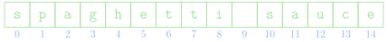
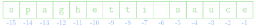

Jed Rembold
September 20, 2024
+)
in Python to concatenate strings\[5+5+5+5+5+5 = 6 \times 5\]
You multiply by a integer: the number of times you want the concatenation repeated
print("Betelguese, " * 3)You can not multiply two strings together, Python will not understand what you are trying to do

You can select individual characters from the string using the syntax
|||string|||[|||k|||]where |||string||| is the desired string
(or variable assigned to a string) and
|||k||| is the index integer of the
character you want
>>> print("spaghetti sauce"[5])
e
A common use case is to grab the last character of the string, using
|||string|||[-1]which is shorthand for
|||string|||[len(|||string|||)-1]Often, you may want more than a single character
Python allows you to specify a starting and an ending index through an operation known as slicing
The syntax looks like:
|||string|||[|||start||| : |||limit|||]where |||start||| is the first index to
be included and everything up to but not including the
|||limit||| is included
|||start||| and
|||limit||| are actually optional (but the
: is not)
|||start||| omitted, the slice will
begin at the start of the string|||limit||| omitted, the slice will
proceed to the end of the stringCan add a third component to the slice syntax, called a stride
|||string|||[|||start||| : |||limit||| : |||stride|||]Specifies how large the steps are between each included index
Can also make the stride negative to proceed backwards through a string
>>> s = "spaghetti sauce"
>>> s[4:8]
hett
>>> s[10:]
sauce
>>> s[:10:2]
sahtiSuppose you have the string
x = "consternation" and you’d like to just
extract and print the word "nation". Which
expression below will not give you the string
"nation"?
x[7:len(x)]x[7:]x[-6:len(x)]x[-6:-1]Python lets you use normal comparison operators to compare strings
string1 == string2is true if string1 and
string2 contain the same characters in the
same order
Comparisons involving greater than or less than are done similar to alphabetical ordering
All comparisons are done according to their Unicode values.
"cat" > "CAT"Sometimes you want to check if a string shows up as a piece of another string
You do have the tools to do this manually:
def check_if_substr(part, whole):
L = len(part)
for i in range(len(whole) - L):
if whole[i:i+L] == part:
return True
return FalseThankfully, Python offers you the in
keyword, which accomplishes the same thing, but much simpler:
if |||part||| in |||sequence|||:
|||your code here|||for loop!s = "hello"
for i in range(len(s)):
print(s[i], 'is letter', i)s = "hello"
for letter in s:
print(letter)Strings are what we call immutable: they can not be modified in place by clients.
You can “look” at different parts of the string, but you can not “change” those parts without making a whole new string
s = "Cats!"
s[0] = "R" # THIS WILL ERROR!!You can of course create a new string object with the desired traits:
s = "R" + s[1:]This applies to all methods that act on strings as well: they return a new string, they do not modify the original
So far, all operations between or on objects have used symbols to indicate the operation
+ sign, for instanceGoing forward, we will begin to see examples of operations on objects that use receiver syntax
In receiver syntax, we specify the object to act on, followed by a dot and then a predefined function (called a method here) name
|||object|||.|||method_name|||()() at the
end| Method | Description |
|---|---|
|||string|||.lower() |
Returns a copy of |||string||| with all
letters converted to lowercase |
|||string|||.upper() |
Returns a copy of |||string||| with all
letters converted to uppercase |
|||string|||.capitalize() |
Returns a copy of |||string||| with the
first character capitalized and the rest lowercase |
|||string|||.strip() |
Returns a copy of |||string||| with
whitespace and non-printing characters removed from both ends |
|||string|||.replace(|||old|||, |||new|||) |
Returns a copy of |||string||| with
all instances of |||old|||
replaced by |||new||| |
| Method | Description |
|---|---|
|||char|||.isalpha() |
Returns True if
|||char||| is a letter |
|||char|||.isdigit() |
Returns True if
|||char||| is a digit |
|||char|||.isalnum() |
Returns True if
|||char||| is letter or a digit |
|||char|||.islower() |
Returns True if
|||char||| is a lowercase letter |
|||char|||.isupper() |
Returns True if
|||char||| is an uppercase letter |
|||char|||.isspace() |
Returns True if
|||char||| is a whitespace character (space,
tab, or newline) |
|||char|||.isidentifier() |
Returns True if
|||char||| is a legal Python identifier |
Constructing text or a sentences by interleaving strings and other objects comes up a lot in communicating code results to a user
For any Python version past 3.6, the nicest and easiest way to do this is with what are called f-strings:
A = 10
print(f"The value of A is: {A}!")You can define an f-string anytime you would normally define a string, just be aware that the substitution happens with the values of variable at that point
A = 10
s = f"The value of A is {A}"
A = 12
print(s)inputWe’ve seen how to display information to a user, but to retrieve
data from a user, we can use Python’s built-in
input() function
The form will generally look like:
|||variable||| = input(|||prompt_text|||)|||variable||| is the variable name you
want to assign the user’s typed input to|||prompt_text||| is the string that
will be displayed on the screen to communicate to the user what they
should be doingThe input() function always
returns a string
If you want to get an integer from the user, you will need to convert it yourself after retrieving it
num = int(input('Pick a number between 1 and 10: '))english.py Libraryenglish module
english module exports two
resources:
ENGLISH_WORDS: a constant sequence which
contains all the valid English words in alphabetical orderis_english_word(): a predicate function
which takes a string as input and returns
True or False
depending on if that string is a valid English wordSuppose we wanted to determine the longest word in the English language without vowels:
from english import ENGLISH_WORDS
def find_first_vowel(word):
for i in range(len(word)):
if word[i].lower() in "aeiou":
return i
return -1
def find_longest_no_vowels():
best_length = 0
for word in ENGLISH_WORDS:
vowel_loc = find_first_vowel(word)
if vowel_loc == -1 and len(word) > best_length:
best_length = len(word)
print(word)
if __name__ == '__main__':
find_longest_no_vowels()fleet ⟶ eetflay
orange ⟶
orangeway
def find_first_vowel_index(word):
"""
Find the first vowel in a word and return its index,
or return None if no vowels found.
"""
for i in range(len(word)):
index = "aeiou".find(word[i].lower())
if index != -1:
return i
return Nonedef word_2_pig_latin(word):
"""
Convert a single word with no special characters from
English to Pig Latin.
"""
vowel = find_first_vowel_index(word)
if vowel is None:
return word
elif vowel == 0:
return word + "way"
else:
return word[vowel:] + word[:vowel] + "ay"def platin_equals_english():
count = 0
for word in ENGLISH_WORDS:
platin = word_2_pig_latin(word)
if is_english_word(platin) and word != platin:
print(word, ":", platin)
count += 1
return count